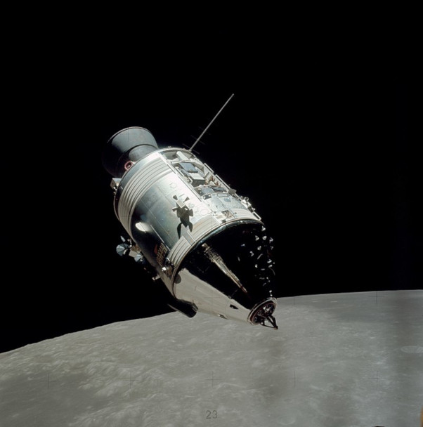

Elegimos ir a la Luna en esta década, y
también afrontar los otros desafíos, no porque
sean fáciles, sino porque son difíciles, porque esta meta servirá
para organizar y medir lo mejor de nuestras energías y aptitudes,
porque es un desafío que estamos dispuestos a aceptar, que no estamos
dispuestos a posponer, y que tenemos toda la intención de ganar, también a los demás.
John F. Kennedy, presidente de los Estados Unidos, 12 de septiembre de 1962
El Programa Apolo fue un programa espacial tripulado desarrollado
por Estados Unidos en la década de 1960 en el marco de la carrera espacial
con la Unión Soviética durante la Guerra Fría. El proyecto comenzó en julio de 1960,
cuando la agencia espacial estadounidense NASA anunció el programa, como
continuación de las misiones Mercury, que tendría como objetivo el sobrevuelo
tripulado de nuestro satélite para localizar una zona apropiada con vistas a un
eventual alunizaje de astronautas, que cumpliría así el viejo sueño del viaje a
la Luna por parte del ser humano. Esto se hizo finalmente realidad en julio de 1969,
cuando la misión Apolo 11, comandada por Neil Armstrong, Edwin Aldrin, y
Michael Collins alunizó por primera vez en el satélite terrestre.
De repente me di cuenta de que aquel diminuto guisante,
hermoso y azul, era la Tierra. Levanté un dedo, cerré un ojo,
y mi pulgar tapó por completo el planeta. Pero no me sentí como
un gigante. Me sentí muy, muy pequeño
Neil Armstrong, astronauta del Apolo 11
Previo a las misiones con descenso proyectado a la superficie de
la Luna, se probaron los sistemas de vuelo en varios lanzamientos
automáticos (Apolo 2, 3, 4, 5 y 6 ), y después hubo dos pruebas
tripuladas en órbita terrestre (Apolo 7 y 9), y dos misiones solo
orbitales (sin alunizaje) a la Luna (Apolo 8 y 10). En 1973, una vez finalizado
el programa lunar, tres naves Apolo fueron usadas para enviar tripulaciones a la
estación espacial Skylab (misiones SL-2, SL-3 y SL-4) y en 1975 fue lanzada la
última nave Apolo, para la misión Apolo-Soyuz.
El Proyecto Apolo fue uno de los triunfos más importantes
de la tecnología moderna. Seis misiones lograron posarse sobre la
superficie lunar (Apolo 11, 12, 14, 15, 16 y 17) con un solo fallo:
la misión Apolo 13 no pudo concretar su meta por la explosión del
tanque de oxígeno líquido del módulo de servicio, pero la tripulación regresó a salvo.
Estuve en la Luna, sentado en el porche de Dios
Eugene Cernan, astronauta del Apolo 17
El cohete Saturno V y la nave Apolo
Saturno V
El Saturno V (Saturn V) fue un cohete
desechable de múltiples fases y de
combustible líquido usado en los programas Apolo y Skylab de la NASA.
Su diseño estuvo a cargo de Wernher von Braun en el Marshall Space Flight
Center y sus principales
nstructores fueron Boeing, North American Aviation, Douglas Aircraft Company e
IBM. Fue el más grande de la familia de cohetes Saturno.

Módulo de mando y servicio
El módulo de mando y servicio (abreviado CSM, del inglés Command and Service Module)
fue uno de los dos componentes principales de la nave espacial Apolo
de los Estados Unidos, utilizada para el programa Apolo. En las misiones del Programa Apolo
era el vehículo encargado de transportar a los
tres astronautas hasta la órbita de la Luna, mantenerlos allí y hacerlos regresar a la
Tierra mediante un amerizaje controlado.
Módulo Lunar
El módulo lunar fue un vehículo espacial de dos etapas diseñado
para el alunizaje durante el programa Apolo.